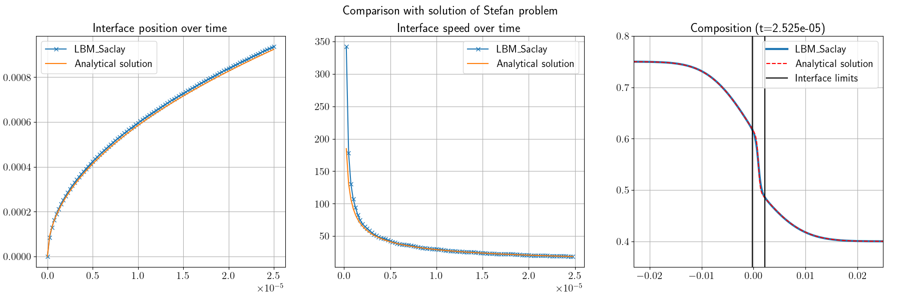
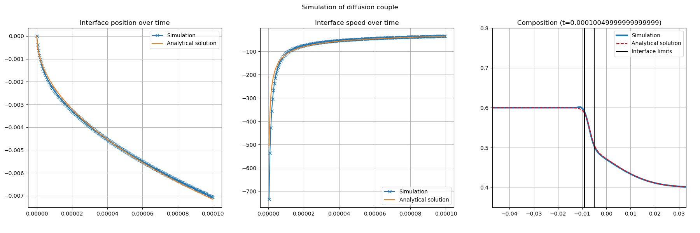
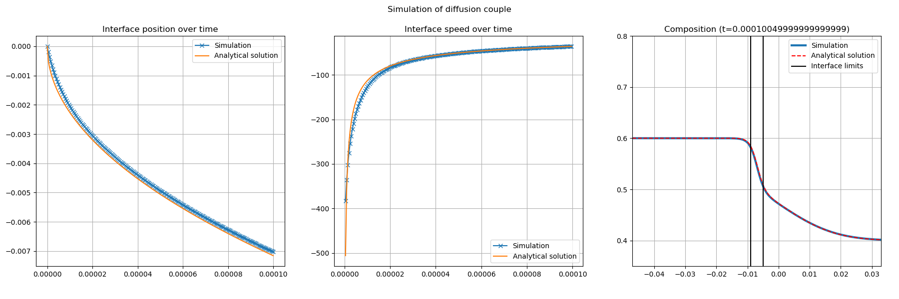
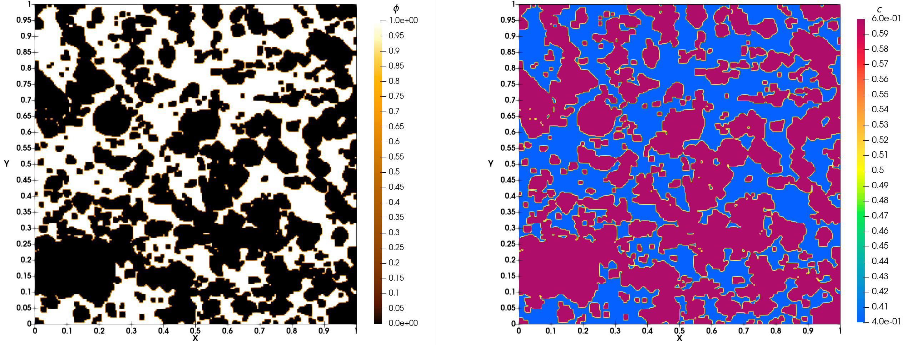
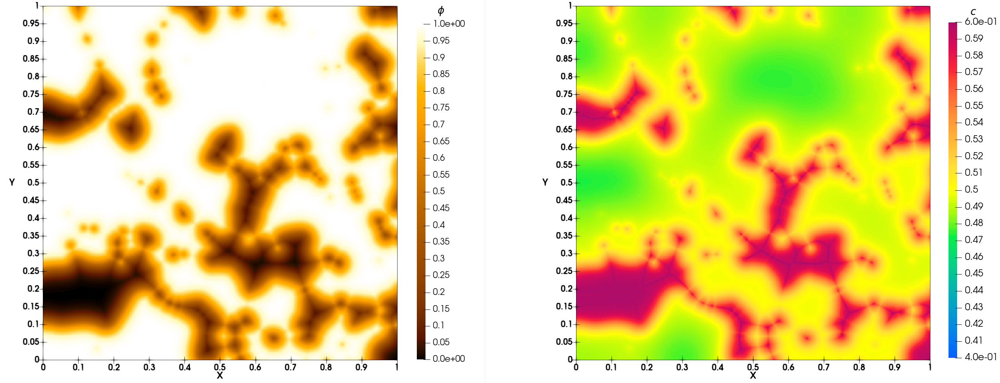

Binary dissolution
Compilation of kernel GPMixt
Compilation on A6000
Makefile for GPU of manwe server
For
cudaon GPU A6000 of manwe Go to folderLBM_Saclay_Rech-Dev
$ cd LBM_Saclay_Rech-Dev
and execute the configure_build.sh script to create the makefile
$ ./compilation/manwe/cuda_a6000/configure_build.sh
will return:
The following problems are currently implemented: 0 AC 1 Advection-Diffusion 2 Crystal_growth_Younsi 3 GPMixt 4 GPMixtNS 5 GPMixtTernary 6 GPMuTernary 7 MPwSLphC 8 NS 9 NS_3phases_1comp_phase_change 10 NSAC_Comp 11 NSAC_Comp_3phases 12 NSAC_Comp_3phases3D 13 NSAC_coupling 14 NSAC_Fakhari 15 NSAC_Surfactant Choose which problems to include by indicating a list of space or comma separated numbers, eg '0 1' or '0,1'. Write 'all' to include all problems. Problem numbers:
Compilation
Write 3 for GPMixt kernel
Problem numbers: 3
Go to the directory that is indicated by the green link, e.g., if number 3 has been set for GPU:
$ cd LBM_Saclay_Rech-Dev/build_cuda_a6000/build_GPMixt
Compile:
$ make -j 22
Run test cases
Stefan problem with \(D_s \sim D_l\)
Run Stefan problem
Go to the folder of Stefan problem
$ cd run_training_dissolution/01_Binary_Stefan-Problem
Run the test case on
volatileof manwe
$ LBM_Saclay_Rech-Dev/build_cuda_a6000/build_GPMixt/src/LBM_saclay d2q9_1d_Stefan.ini
Post-process with paraview12
$ paraview12&
Commands in paraview12
For interface positions
Open all
vtifilesLBM_D2Q9_Stefan_
Ctrl spaceandCell Data to Point DataandApplyClic on
contourand select fieldphiwith value0.5andApply
File–>Save Data, choose.cvsformat. Select it and write the file name:interfaceClic on
Write Time StepsandWrite Time Steps SeparatelyandOK
For composition profile
Open file
LBM_D2Q9_Stefan_FINAL.vti
Ctrl spaceandCell Data to Point DataandApply
Ctrl space+Plot Over LineSelect
Sample At Segment CentersClic onX axisandApply–> new graph with profile
File–>Save Data,file name:profil_comp_100.csvandOK
Next in your terminal
{kind=link}

Fig. 30 Comparison between analytical solution of Stefan problem and LBM_Saclay with GPMixt kernel
Stefan problem with \(D_s=0\)
1. Without anti-trapping current
Run first test case without anti-trapping current
Go to the folder of Stefan problem
$ cd /run_training_dissolution/02_Binary_Anti-Trapping-Current
Run the first test case without anti-trapping current
$ LBM_Saclay_Rech-Dev/build_cuda_a6000/build_GPMixt/src/LBM_saclay Test_1d_Stefan_Ds0_no-anti-trapping.ini
Post-process with paraview12
$ paraview12&
Commands in paraview12
For interface positions
Open all
vtifilesLBM_Stefan_Ds0_no-anti-trapping
Ctrl spaceandCell Data to Point DataandApplyClic on
contourand select fieldphiwith value0.5andApply
File–>Save Data, choose.cvsformat. Select it and write the file name:interfaceClic on
Write Time Steps+Write Time Steps Separately+Choose Arrays To Write+ unslectphi+OK
For composition profile
Open file
LBM_Stefan_Ds0_no-anti-trapping_FINAL.vti
Ctrl spaceandCell Data to Point DataandApply
Ctrl space+Plot Over LineSelect
Sample At Segment CentersClic onX axisandApply–> new graph with profile
File–>Save Data,file name:profil_comp.csvandOK
Next in your terminal
For training session: python script
$ python Script_plot-Stefan1D_anti-trapping.py
You must obtain Fig. 31
{kind=link}

Fig. 31 Comparison between analytical solution of Stefan problem with \(D_s=0\) and LBM_Saclay without anti-trapping current
2. With anti-trapping current
Exercise
Start again with LBM_Saclay input file Test_1d_Stefan_Ds0_with-anti-trapping.ini and compare the composition profile. You must obtain Fig. 32
{kind=link}

Fig. 32 Comparison between analytical solution of Stefan problem with \(D_s=0\) and LBM_Saclay with anti-trapping current
Simulation of porous medium dissolution
Porous medium geometry
Description of porous medium geometry
The porous medium geometry is described in the datafile image_niv1_slice0.dat.
This is a text file with format
i,j,k,valuewhere
i,j,kare the positions of x, y, z andvalueis0or1. The file contains 256x256x237 values.
i.e. for the first ten lines:
0,0,0,1 1,0,0,1 2,0,0,0 3,0,0,0 4,0,0,0 5,0,0,0 6,0,0,0 7,0,0,0 8,0,0,0 9,0,0,0 ...
Options in LBM_Saclay input file
The datafile name of porous geometry must be set in the input file of LBM_Saclay in the [init] section with init_type=data
[init] init_type=data data_file=./image_niv1_slice0.dat sizeRatio=2 initCl=0.4 initCs=0.6
The file image_niv1_slice0.dat is used to initialize the phase-field \(\phi(\boldsymbol{x},0)\). Next, the composition is initialized with \(\phi(\boldsymbol{x},0)\) and \(c_l^0\) (initCl) and \(c_s^0\) (initCs).
The mesh of the that test case is composed of nx=512 and ny=512 cells (see section [mesh]). The datafile image_niv1_slice0.dat contains only 256 values for i and 256 values for j. The input file is rescaled with the option sizeRatio=2. For using the same datafile on a mesh composed of 1024x1024 cells, the option must be set to sizeRatio=4.
Run simulation of porous medium dissolution
Go to folder 03_Binary_Porous-Medium and run LBM_Saclay with the .ini input file:
$ cd run_training_dissolution/03_Binary_Porous-Medium $ LBM_Saclay_Rech-Dev/build_cuda_a6000/build_GPMixt/src/LBM_saclay Test_Dissolution_Porous-Medium.ini
Post-process with paraview12
Commands in paraview12
Open all
vtifilesTest_Dissolution_Porous-MediumLoad paraview state
State-Paraview_5-12_Porous-Medium.pvsm
At initial time of simulation you must obtain Fig. 33. At final time of simulation, you must obtain Fig. 34.
{kind=link}

Fig. 33 Simulation of porous medium dissolution: initial time
{kind=link}

Fig. 34 Simulation of porous medium dissolution: final time